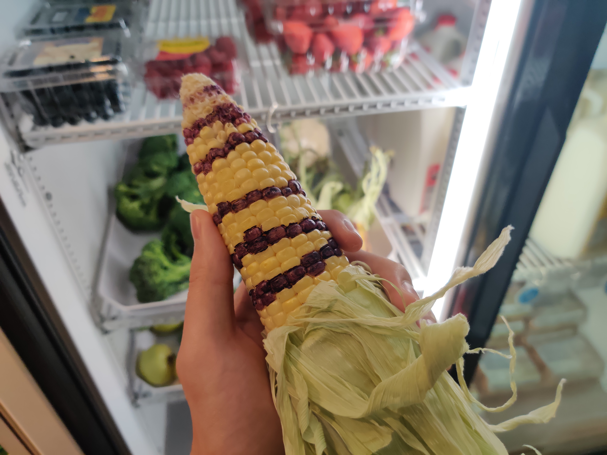
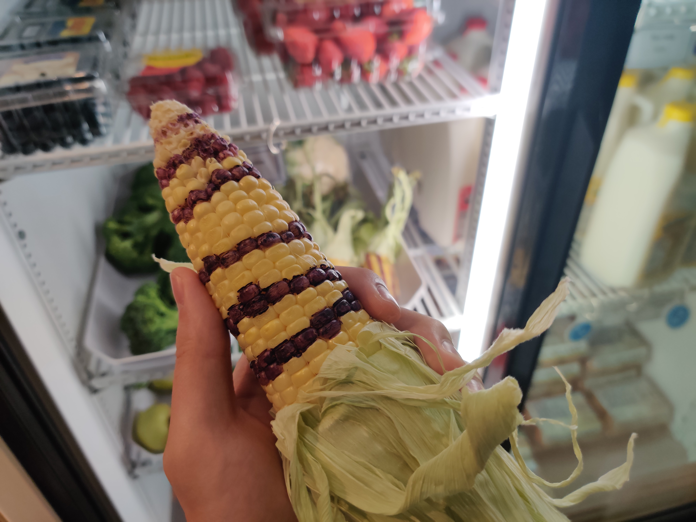
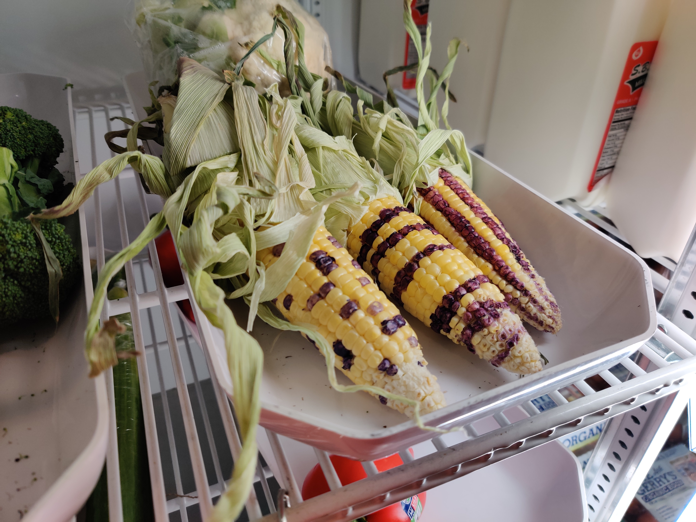
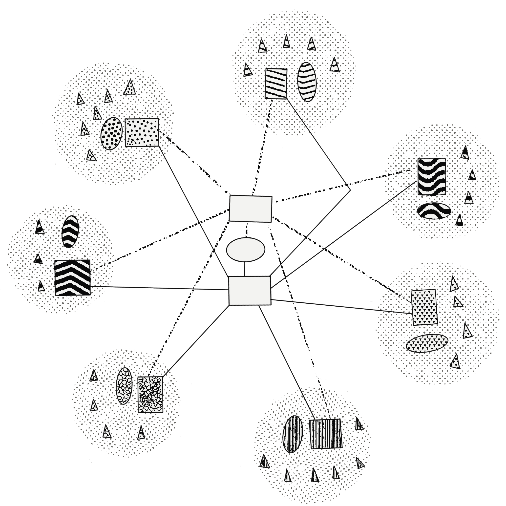

Organic Media/Synthetic Food
  

It is seven generations from the 7th generation prophesied by Black Elk and other tribal leaders. The Lakota Language Consortium (LLC) has evolved into the Lakota Language Computational and Interspecies Communication Council. The revival of indigenous languages has brought back into group consciousness the onto-epistemological worldview of our ancestors. In this worldview, the status of the human has been decentered as the apex of the evolutionary chain and placed back into a more equitable standing amongst the natural world. Humans share the earth with other beings, both on the physical and spiritual plane, although not all beings are perceptible to human beings due to the evolutionary programming of our biological determined sensory apparati--nose, ears, eyes, skin, tongue. The imaginary line between human and nature instituted through the system of colonization has been troubled. This “shoaling” of the conceptual boundary has heightened the desire to learn from, serve, and communicate with other beings in a reciprocal and symbiotic manner.
Since much of the ancient technology developed by indigenous ancestors over millennia to commune with other beings was lost and destroyed in the violent process of colonization, indigenous artists, engineers, spiritual and community leaders have focused their energy and resources on developing modern technologies and processes to enhance inter-species communication and foster symbiotic relationships with the natural environment. This initiative, spearheaded by Tribal Colleges, Tribal Councils, and the LLCICC, lead to the development and distribution of the basic Enhanced Sensory Communication Apparatus (ESCA) kits. The ESCA kit is a system of sensory apparatuses, some worn and some embedded in the human body, to assist in cross-species communication and collaboration. While each individual has their own ESCA kit, all ESCA kits are wirelessly networked to quantum computers situated in undisclosed locations throughout tribal territory. Each tribal community, or band, has its own quantum computer that serves as its local node, providing computational power to the ESCA kits in that community. Access to the computational abilities of each local quantum computer is determined by the tribe. These local nodes are connected to a centralized database and series of quantum computers which service and connect the entire tribal nation. For the example, the Lakota tribal nation’s quantum computer is situated somewhere in the Black Hills, but each tribal band—the Oglala, Hunkpapa, Pahe Sapa etc.— have their own local quantum computers located and maintained on the reservation.
Each tribe has its own database and server that the quantum computers use for various quantum machine learning processes and to communicate to the ESCA devices. The move towards quantum computers from classical computers has enabled exponentially faster processing speeds capable of servicing whole communities even with extremely complex or data heavy tasks, as well as the ability to structure algorithms using processes that are derived from physics rather than logic, meaning they are natural rather than the abstracted simulations produced by the binary framework of bits upon which classical computers are built. The infrastructure required to operate quantum computers has prompted a shift from personal computers, where computational tasks are performed on an individual’s machine, towards cloud computing where the bulk of computational tasks are performed on a single large and extremely powerful computer networked to personal devices interfacing with the super computer. The reduced function of the personal devices has enabled them to be much smaller since their primary purpose is to input data to a centralized computer which performs the computational task and then outputs the result back to the personal device.
Because of the power of the ESCA kits and the potential ramifications for the environment, indigenous knowledge, and tribal communities, the decision around distribution of the ESCA kits are determined according to the customs and laws of each tribe. A number of tribes have revived old rituals once performed to help members of the tribe find their place in the world and within the community. A number of dormant and underground tribal societies have also been revived or resurfaced. While the LLCICC has made available to all participating tribes basic ESCA kits, most tribes and societies have created customized kits that augment or replace the basic ESCA kit inorder to enhance the capabilities of members of the community who have earned the right or demonstrated their ability to wield such power responsibly. In a decision to follow tribal customs rather than Settler processes, the decision of who gets inducted into certain societies and allowed access to specialized ESCA units isn’t made through a democratic voting system. A person cannot run or campaign for this position. Instead, each person must demonstrate their commitment to the environment, the community, and to a society through their actions and through their temperment. It requires a lifetime of action and humility. Members of the community and members of various societies will determine through their own processes when a person is ready to receive a specialized ESCA component or access to a knowledge database, and they will be honored accordingly through ceremony. It is also the case that people can be chosen to receive certain ESCA units through methods of communication/selection demonstrated by other beings, like through a vision (spirit communication), or through significant gestures towards an individual made by plant or animal beings. While all ESCA kits could be embedded within the body, many have chosen to wear these kits to demonstrate their status. This not only honors the person who has earned access to the technology, it serves as a reminder of their role and fosters transparency to the rest of the tribe so that they can be held accountable.
ESCA kits can enable: intertribal and interspecies translation, enhanced sensory communication, embedded media location, cultural database archiving, and wireless networked connection to a series of quantum computers owned and operated by participating tribes. This networked connection collects data from the enhanced sensory apparti which is encrypted and passed to a database. This data is fed to the quantum computers to improve data models and identify patterns in communication and behavior within tribes, between tribes, within species, and between species. This allows for realtime translation between the communication patterns found inter- and intra- indigenous languages and non-human species. It is also used to identify new concepts, thoughts, feelings, or situations for which we do not have language or for which we need new sensory stimuli to enhance the acquisition of the communicated meaning. Through this symbiotic process, new language is created to communicate emerging thoughts and new thoughts are enabled through emerging language. ESCA have been developed through the tribal colleges and tested on intergenerational test groups on the reservation, and within the language nests and language camps started as part of the language revitalization efforts within the tribes. Partnerships with ranchers, national parks, and keepers of indigenous seed banks and traditional gardens have allowed for testing and development among non-human species. Data transfer is encrypted through quantum processes, and certain media, data, or information is only translated, transferred, or made available based on honors earned and defined within each tribe.